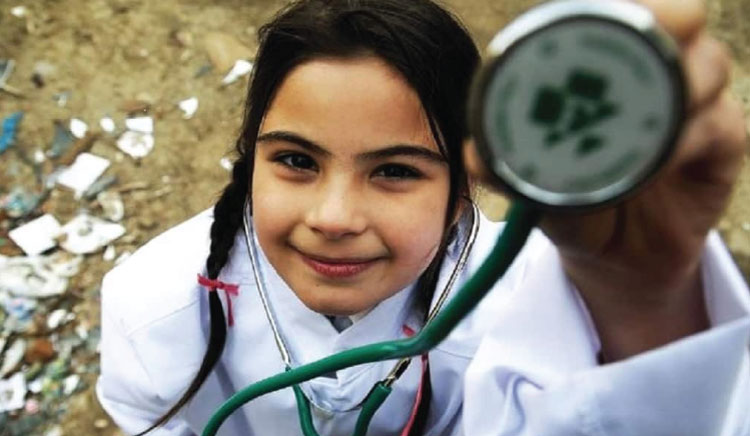

Достъпът до образование, здравеопазване и социални услуги е основен елемент от социалната политика и ключов фактор за намаляване на социалното неравенство и бедността. В рамките на Европейския съюз тези области са тясно свързани с концепцията за социално включване и равни възможности.
Като държава членка на ЕС, България разработва политики и стратегии, които са съобразени с европейските приоритети. Основна цел на тези политики е гарантирането на равен достъп до основни обществени услуги за всички граждани, особено за уязвимите групи – деца, хора с увреждания, възрастни хора и социално изключени общности.
Ромската общност е най-голямото етническо малцинство в Европа и продължава да бъде една от най-уязвимите социални групи. Ограниченият достъп до образование, здравеопазване и социални услуги са сред основните фактори за социалното изключване на ромите.
Сдружение „Ръка за ръка 8“ поставя сред най-високите си приоритети работа за повишаване образованието и подобряване здравните и социални услуги за ромите в България, както и в рамките на ЕС.
Ромската общност в България представлява значителна част от населението – приблизително 750 000 души или около 10% от населението на страната.
Поради това подобряването на достъпа до основни обществени услуги е важен приоритет както в националните политики, така и в стратегиите на Европейския съюз. Основната цел е насърчаване на социалното включване, равните възможности и по-активното участие на ромите в обществения живот.
Достъп до образование, здраве и социални услуги – анализ на политики и добри практики в България и Европейския съюз
Европейските политики в областта на образованието, здравето и социалните услуги се основават на принципите на Европейския стълб на социалните права, който гарантира достъп до качествено образование, здравни услуги и социална защита.
Един от основните финансови инструменти за реализиране на тези политики е Европейският социален фонд плюс (ESF+), който подпомага държавите членки при реализирането на програми за образование, социално включване и достъп до услуги. Чрез този фонд в България се инвестират около 2.6 милиарда евро за периода 2021–2027 г., насочени към подобряване на достъпа до образование, обучение, социални услуги и подкрепа за уязвими групи.
Фондът подпомага също така мерки за намаляване на ранното отпадане от училище, развитие на социални услуги и борба с детската бедност.
Друг важен инструмент на ЕС е Европейската гаранция за децата, която цели да осигури на всички деца достъп до основни услуги като образование, здравеопазване, хранене и социална подкрепа.
Политиките на Европейския съюз относно ромската интеграция се основават на Стратегическата рамка на ЕС за равенство, приобщаване и участие на ромите 2020–2030. Тя поставя акцент върху подобряването на достъпа до образование, здравни услуги, жилищни условия и социална защита за ромските общности.
Основният стратегически документ в България е Националната стратегия на Република България за равенство, приобщаване и участие на ромите (2021–2030). Тя е разработена в съответствие с европейската рамка и цели подобряване на условията на живот и достъпа до услуги за ромската общност.
Стратегията се изпълнява чрез национални и местни планове за действие и включва няколко основни направления:
В България достъпът до образование, здраве и социални услуги се регулира чрез редица национални стратегии и програми. Сред най-важните са:
• Националната стратегия за намаляване на бедността и насърчаване на социалното включване 2030
• Националната стратегия за развитие на социалните услуги
• Националната стратегия за учене през целия живот
• Националната здравна стратегия
Тези политики са насочени към подобряване на достъпа до услуги, повишаване на качеството на образованието и намаляване на социалните неравенства.
Образованието е ключов фактор за социалното включване и икономическото развитие. В България се прилагат различни мерки за подобряване на достъпа до образование, включително:
• програми за предотвратяване на отпадането от училище;
• интеграция на деца от уязвими групи;
• развитие на професионалното образование и обучение.
Програма „Образование“ 2021–2027 подпомага модернизацията на образователната система, повишаването на качеството на обучението и развитието на умения, необходими за съвременния пазар на труда.
Образованието е ключов фактор за социалното включване на ромите. Основните предизвикателства са ранното отпадане от училище, ниската образователна степен и сегрегацията в някои училища.
• За справяне с тези проблеми се прилагат мерки като:
• образователни медиатори;
• програми за интеграция на деца от етнически малцинства;
• инициативи за намаляване на ранното напускане на училище.
Образователната интеграция на ученици от малцинствени групи е включена и в Стратегическата рамка за развитие на образованието, обучението и ученето през целия живот (2021–2030).
Здравната политика в България се стреми да осигури равен достъп до медицински услуги, особено за социално уязвимите групи. Основните мерки включват:
• развитие на първичната медицинска помощ;
• здравни програми за превенция на заболявания;
• здравни медиатори за работа с уязвими общности.
Много роми срещат трудности при достъпа до здравни услуги поради липса на здравно осигуряване, ниска здравна култура или социални бариери.
Националната политика включва:
• програми за здравна профилактика;
• работа на здравни медиатори;
• инициативи за повишаване на здравната култура в ромските общности.
Освен това Националната здравна стратегия 2021–2030 предвижда мерки за подобряване на достъпа до медицински услуги и намаляване на здравните неравенства.
Системата на социалните услуги в България се развива значително през последните години чрез процеса на деинституционализация и развитието на услуги в общността.
Сред най-разпространените услуги са:
• центрове за обществена подкрепа;
• дневни центрове за хора с увреждания;
• социални услуги за възрастни хора;
• услуги за домашна грижа.
Много от тези услуги се финансират чрез европейски програми и национални инициативи за социално включване. Тези мерки имат за цел да подобрят социалното включване и да намалят социалната изолация на уязвимите групи.
В своята всекидневна работа сдружение „Ръка за ръка 8“ се опира на добрите практики в България и ЕС:
• Образователни и здравни медиатори
Една от най-успешните практики в България е използването на медиатори, които подпомагат комуникацията между институциите и ромските общности. Те насърчават посещаемостта в училище и подпомагат достъпа до здравни услуги.
• Интегрирани центрове за услуги
Пример за добра практика е проектът за социален център за включване в община Стамболийски, който предоставя комбинирани образователни, здравни и социални услуги за ромските общности. В рамките на проекта работят социални работници, педагози и здравни медиатори, които подкрепят децата и техните семейства. Този интегриран подход допринася за по-ефективна подкрепа на уязвимите групи.
В редица европейски държави се прилагат успешни модели за подобряване на достъпа до услуги за ромите.
• Интегрирани социални политики
В страни като Испания и Финландия се използва интегриран подход, който съчетава образование, социални услуги и програми за заетост.
• Ранно детско образование
Много държави от ЕС развиват програми за ранно детско образование, които подпомагат социализацията и намаляват риска от отпадане от училище.
• Социални услуги в общността
Европейските политики насърчават прехода от институционална грижа към услуги в общността, което подобрява качеството на живот на уязвимите групи.
Въпреки наличието на стратегии и програми, достъпът до образование, здраве и социални услуги за ромите остава предизвикателство. Основните проблеми включват:
• социална изолация и бедност;
• ниско ниво на образование;
• ограничен достъп до здравно осигуряване;
• недостатъчно развитие на социалните услуги в някои региони.
За подобряване на ситуацията е необходимо по-ефективно прилагане на съществуващите политики, както и по-активно участие на местните общности и неправителствените организации.
Достъпът до образование, здраве и социални услуги е ключов фактор за социалното включване на ромската общност. Европейските стратегии и националните политики в България създават важна рамка за подобряване на условията на живот и насърчаване на равните възможности.
Въпреки постигнатия напредък, е необходимо по-ефективно прилагане на тези политики и развитие на интегрирани услуги, които да подкрепят ромските общности. Чрез сътрудничество между държавните институции, местните власти и гражданското общество може да се постигне устойчиво подобрение на достъпа до образование, здраве и социални услуги.